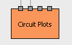
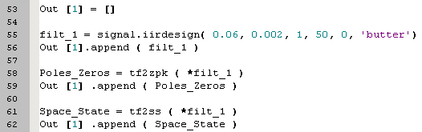
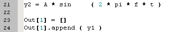
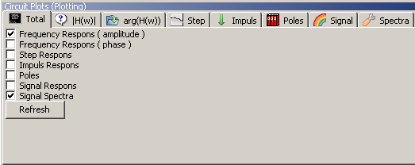
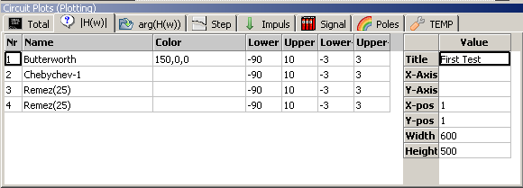
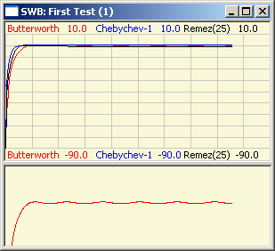
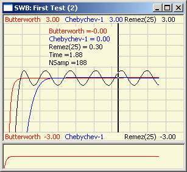
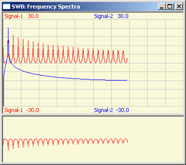

Bricks Signal Processing  ( august 2009 )
( august 2009 )
Application Designer / Domain Expert / Control Designer / Core Developer
Circuit Plots
|
This Brick can be used to show time signals, circuit characteristics and the effect of circuits on the time-signals. All 4 inputs are equal and accepts sequences of: signals, transfer functions, poles-zeros-gain representation and State-Space descriptions. |
 |
Here you can see how the different signals can be attached. The Brick determines the type of the signal from the length of an input element.


The main window that's embedded in the application window, is mainly used to determine the settings of what is to be displayed and how things have to be displayed. The graphs them self are shown in stand alone windows, of the type Scope_Plot.
what is to be displayed

With the Refresh button is pressed all graph windows are recalculated. The refresh can also be done with F9 (except when editing a gridcell.
how should it be displayed

The table on the right specifies the properties of the window.
The table on the left specifies, name, line color, lower and upper margins of the graph display. There are 2 sets of margins, if the second set is empty, only 1 graph display is shown, otherwise 2 graph displays are shown, each with its own corresponding margins (so you can automatically zoom into some details). The graph windows below, gives an example of the transfer function of a high-pass filter, where the second window is used to automatically zoom into the passband ripple.
The standalone graph window
 
Signal Respons
This action can generate a number of windows, depending on the number of signals and circuits. It basically shows:
If there's just one signal or if there are no circuit descriptions, just one window is shown.
Spectra
Shows the spectra of each signal.
This function should be extended with a window function to reduce leakage effects.
